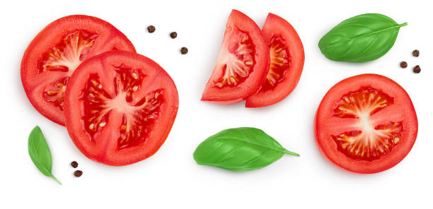
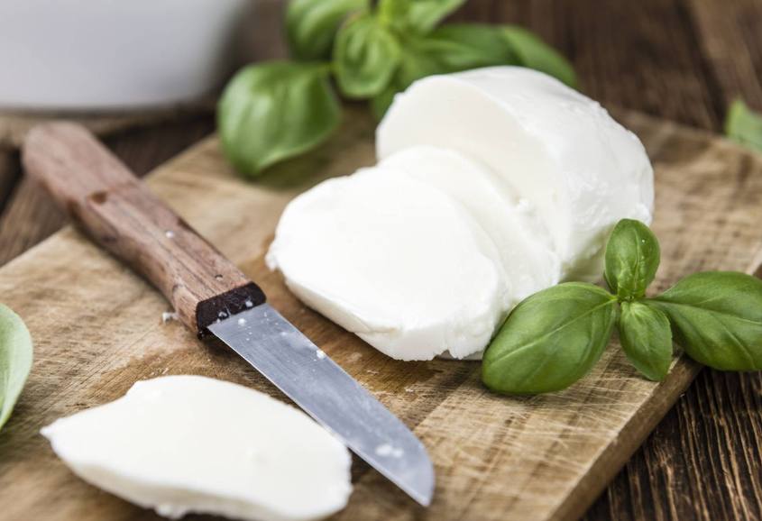
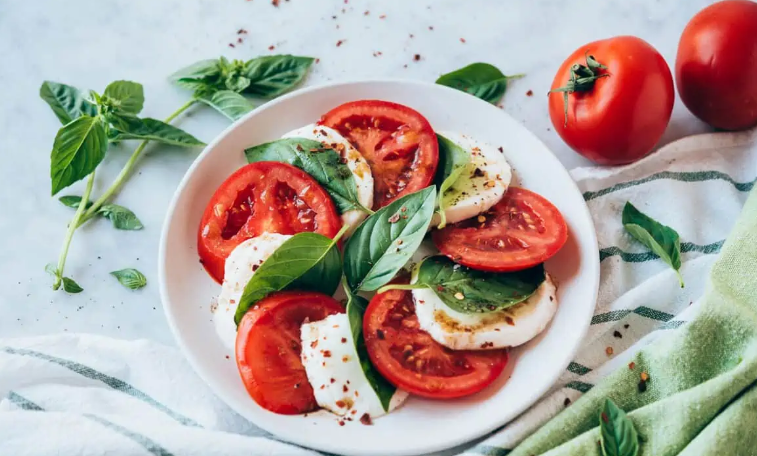

Receta: Ensalada Caprese
Ingredientes:
- Tomates maduros
- Mozzarella fresca
- Hojas de albahaca fresca
- Sal y pimienta al gusto
- Aceite de oliva virgen extra
- Perejil
- Reducción de vinagre balsámico (opcional)
Utensilios necesarios:
- Cuchillo
- Tabla de cortar
- Plato de presentación
Instrucciones paso a paso:
Paso 1: Preparación
Lava y corta los tomates en rodajas y la mozzarella en rebanadas.


Paso 2: Montaje
Alterna las rodajas de tomate, mozzarella y hojas de albahaca en el plato de presentación.
Paso 3: Aderezo
Sazona con perejil , sal y pimienta al gusto. Rocía con aceite de oliva virgen extra y, opcionalmente, con reducción de vinagre balsámico.

Ir a la Activitats